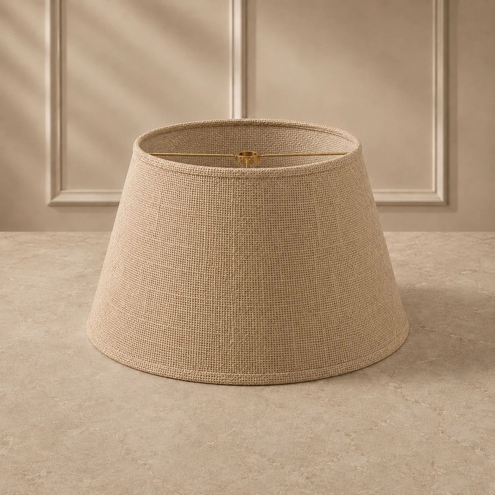

SUA CÚPULA, DO SEU JEITO
Monte sua cúpula personalizada
Escolha o formato, o tecido, a cor e as medidas.
Personalizar agoraCENTER CÚPULAS · FABRICAÇÃO ARTESANAL
Escolha uma cúpula com medidas definidas ou crie a sua sob medida.
COMPRA DIRETA
Escolha o modelo, confira as medidas e compre pelo site.
Consultando produtos e preços…
Produção sob encomenda. Preços consultados no sistema para 1 unidade; o total é recalculado no carrinho.
ENCONTRE SEU FORMATO
Explore formatos ou monte sua cúpula com medidas próprias.

SUA CÚPULA, DO SEU JEITO
Escolha o formato, o tecido, a cor e as medidas.
Personalizar agora
MATERIAIS E ACABAMENTOS
Algodão, linho, cru e juta em opções para diferentes projetos.
Ver opçõesFeitas conforme seu projeto.
Algodão, linho, cru e juta.
Consulte frete no carrinho.
Mercado Pago.
TRADIÇÃO E PERSONALIZAÇÃO
Há 33 anos produzindo cúpulas para abajures e luminárias, peça a peça.